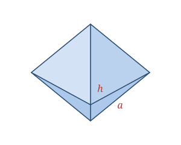

A square pyramid has a square base and four triangular faces that rise to meet at a single apex. When the apex sits directly above the center of the base it is a right square pyramid. Its height h runs from apex to base center, while the slant height l runs from the apex down the middle of a triangular face to the base edge.
The most famous examples are the Great Pyramids of Giza; you'll also see the shape in some rooftops, tent tops, and paperweights.
A square pyramid is defined by the base side a and height h.
| Faces | 5 (1 square + 4 triangles) |
|---|---|
| Edges | 8 |
| Vertices | 5 |
| Base side | a |
| Slant height | l = √(h² + (a⁄2)²) |
As a polyhedron it satisfies Euler's formula: V − E + F = 5 − 8 + 5 = 2.
Slant height l = √(h² + (a⁄2)²)
Volume V = (1⁄3)a²h
Lateral SA LSA = 2a·l
Total SA SA = a² + 2a·l
Take a square pyramid with base side a = 6 and height h = 4.
l = √(h² + (a⁄2)²) = √(16 + 9) = √25 = 5
V = (1⁄3)a²h = (1⁄3)(36)(4) = 48
LSA = 2a·l = 2(6)(5) = 60
Total SA = a² + 2a·l = 36 + 60 = 96
The Great Pyramid of Giza stood as the tallest human-made structure on Earth for about 3,800 years — a square pyramid held that record longer than any building in history.